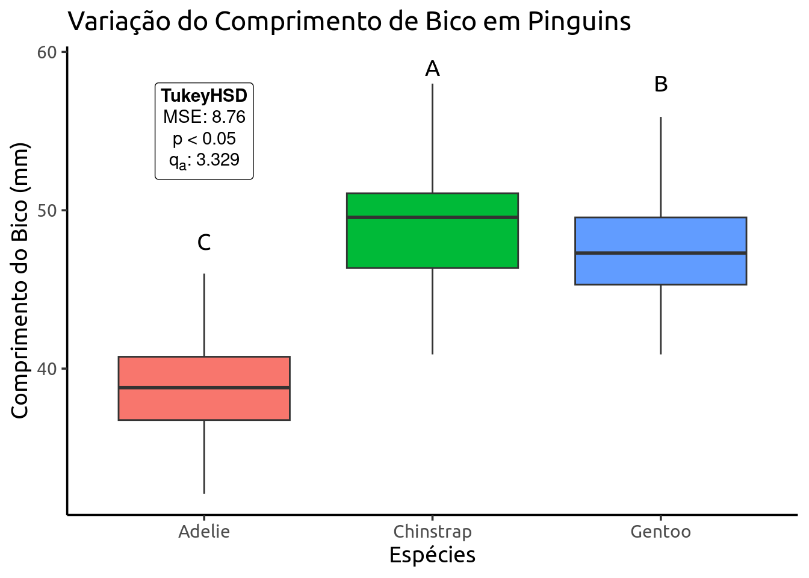

![]()
| Fontes de Variação (FV) | Graus de Liberdade (GL) | Soma de Quadrados (SQ) | Quadrado Médio (QM) | F |
|---|---|---|---|---|
| Tratamento (entre) |
\(p-1\) | \(SQ_{Trat}\) | \(\frac{SQ_{Trat}}{p-1}\) | \(\frac{QM_{Trat}}{QM_{Res}}\) |
| Erro Experimental (dentro) |
\(n-p\) | \(SQ_{Res}\) | \(\frac{SQ_{Res}}{n-p}\) | |
| Total | \(n-1\) | \(SQ_{Total}\) |
Análise de Variância

A Análise de Variância (ANOVA) é uma das ferramentas estatísticas mais influentes e amplamente utilizadas na comparação de médias entre grupos. Seu desenvolvimento é atribuído ao estatístico britânico Ronald A. Fisher, que a introduziu na década de 1920 como parte de seus trabalhos pioneiros em experimentação agrícola. Fisher buscava uma forma eficiente de avaliar se diferenças observadas entre médias de grupos eram estatisticamente significativas ou se poderiam ser atribuídas apenas à variação aleatória.
A grande contribuição de Fisher foi estruturar um método baseado na decomposição da variabilidade total dos dados em componentes atribuíveis a diferentes fontes (como tratamento e erro), permitindo testar hipóteses sobre diferenças entre grupos com base na razão entre essas variâncias. Desde então, a ANOVA tornou-se essencial em diversas áreas do conhecimento — da biologia à engenharia, das ciências sociais às ciências da saúde — sempre que se deseja comparar múltiplos grupos sob um desenho experimental ou observacional controlado.
1 ANOVA
Análise de variância com um fator é uma técnica de teste de hipótese usada para comparar as médias de três ou mais populações. A análise de variância geralmente é abreviada como ANOVA.
Como mencionado anteriormente, a ANOVA é um teste de razão de variâncias. O que a estatistica do teste avalia de maneira resumida:
\[Estatística \ do \ Teste = \frac{Variância \ dentro \ dos \ grupos}{Variância \ entre \ grupos}\]
A variância entre as amostras mede as diferenças relacionadas ao tratamento/efeito atuando em cada amostra. Essa variância também é conhecida como Quadrado Médio do Tratamento.
Já a variância dentro das amostras mede as diferenças dentro da amostra, geralmente relacionadas com o erro amostral. Essa variância também é chamada de Quadrado Médio do Resíduo.
A Estatística \(F\) é o quociente destas duas variâncias, e nossa hipótese nula na ANOVA testa se a média dos grupos é igual:
\[\large H_0: \mu_1 = \mu_2 = \cdots \mu_n\]
2 Tabela da ANOVA
Esta é a famosa tabela da ANOVA, a mesma tabela que é retornada pelas funções que utilizaremos aqui no R. As somas de quadrado podem ser obtidas como:
\(\small \displaystyle SQ_{Total} = \sum_{i=1,j=1}^{I,J}Y_{ij}^2 - \frac{\displaystyle \left( \sum_{i=1,j=1}^{I,J}Y_{ij}\right)^2}{IJ}\)
\(\small \displaystyle SQ_{Trat} = \sum_{i=1}^{I}\frac{T_{i}^2}{J} - \frac{\displaystyle \left( \sum_{i=1,j=1}^{I,J}Y_{ij}\right)^2}{IJ}\)
\(\small SQ_{Total} \ = \ SQ_{Trat} + SQ_{Res}\)
Premissas da ANOVA:
- As amostras devem ser independentes
- As unidades amostrais são selecionadas aleatoriamente
- Distribuição normal (gaussiana) dos resíduos
- Homogeneidade da variância
3 Anova de um Fator
Para nossos exemplos práticos vamos utilizar os dados do pacote palmerpenguins. São dados morfométricos de diferentes espécies de pinguins coletados em diferentes ilhas.
Na ANOVA de um fator testamos o efeito de uma única variável categórica (Tratamento) sobre nossa variável dependente (\(y\)).
Pergunta: Existe diferença no tamanho do bico (bill_length_mm) entre as diferentes espécies de pinguim?
# A tibble: 6 × 8
species island bill_length_mm bill_depth_mm flipper_length_mm body_mass_g
<fct> <fct> <dbl> <dbl> <int> <int>
1 Adelie Torgersen 39.1 18.7 181 3750
2 Adelie Torgersen 39.5 17.4 186 3800
3 Adelie Torgersen 40.3 18 195 3250
4 Adelie Torgersen NA NA NA NA
5 Adelie Torgersen 36.7 19.3 193 3450
6 Adelie Torgersen 39.3 20.6 190 3650
# ℹ 2 more variables: sex <fct>, year <int>Diferente da última sessão, utilizaremos a função aov() para realizarmos a ANOVA.
3.1 Testando Premissas
Assim como fizemos com nosso modelo de regressão linear podemos avaliar nossos resíduos visualmente.
Nossos resíduos parecem seguir normalidade e homocedasticidade. Mas podemos confirmar realizando os testes de Shapiro-Wilk (normalidade) e Bartlett (homocedasticidade).
Lembre-se que sempre testamos os resíduos!
Shapiro-Wilk normality test
data: residuals(anova_bico)
W = 0.98903, p-value = 0.01131
Bartlett test of homogeneity of variances
data: bill_length_mm by species
Bartlett's K-squared = 5.6179, df = 2, p-value = 0.06027Lembrando que a hipótese nula em ambos os testes é de que os dados seguem normalidade/homocedasticidade. Confirmamos assim o nosso diagnístico visual.
3.2 Tabela Anova
Df Sum Sq Mean Sq F value Pr(>F)
species 2 7194 3597 410.6 <2e-16 ***
Residuals 339 2970 9
---
Signif. codes: 0 '***' 0.001 '**' 0.01 '*' 0.05 '.' 0.1 ' ' 1
2 observations deleted due to missingnessE aqui obtemos a nossa tabela da ANOVA. E com base no p-valor obtido podemos confirmar que existe efeito de Espécie sobre o Tamanho do Bico dos Pinguins. Em relação a nossa hipótese nula, isso significa dizer que pelo menos um dos grupos avaliados possui média diferente dos demais.
3.3 Comparação de Médias
Uma vez sabendo que existe diferença significativa, agora precisamos realizar um pós-teste de comparação de médias entre os grupos. Para isso vamos utilizar o pacote agricolae. Este pacote é excelente por possuir diversos pos-testes para anova, entre eles Tukey, SNK, e Duncan.
3.4 Tukey HSD
O Teste Tukey HSD (honestly significant difference) é amplamente reconhecido por controlar de forma rigorosa a taxa de erro familiar, permitindo comparações par a par entre todas as médias com um critério bastante robusto.
Study: anova_bico ~ "species"
HSD Test for bill_length_mm
Mean Square Error: 8.760732
species, means
bill_length_mm std r se Min Max Q25 Q50 Q75
Adelie 38.79139 2.663405 151 0.2408694 32.1 46.0 36.75 38.80 40.750
Chinstrap 48.83382 3.339256 68 0.3589349 40.9 58.0 46.35 49.55 51.075
Gentoo 47.50488 3.081857 123 0.2668810 40.9 59.6 45.30 47.30 49.550
Alpha: 0.05 ; DF Error: 339
Critical Value of Studentized Range: 3.329136
Groups according to probability of means differences and alpha level( 0.05 )
Treatments with the same letter are not significantly different.
bill_length_mm groups
Chinstrap 48.83382 a
Gentoo 47.50488 b
Adelie 38.79139 c3.5 SNK
O Teste Student-Newman-Keuls (SNK) realiza comparações par a par de maneira sequencial, equilibrando a sensibilidade para detectar diferenças com um critério menos conservador que o Tukey HSD, mas mais rigoroso que o teste de Duncan.
Study: anova_bico ~ "species"
Student Newman Keuls Test
for bill_length_mm
Mean Square Error: 8.760732
species, means
bill_length_mm std r se Min Max Q25 Q50 Q75
Adelie 38.79139 2.663405 151 0.2408694 32.1 46.0 36.75 38.80 40.750
Chinstrap 48.83382 3.339256 68 0.3589349 40.9 58.0 46.35 49.55 51.075
Gentoo 47.50488 3.081857 123 0.2668810 40.9 59.6 45.30 47.30 49.550
Groups according to probability of means differences and alpha level( 0.05 )
Means with the same letter are not significantly different.
bill_length_mm groups
Chinstrap 48.83382 a
Gentoo 47.50488 b
Adelie 38.79139 c3.6 Duncan
O Teste de Duncan adota uma abordagem mais liberal, facilitando a identificação de intervalos de similaridade entre as médias, mas com uma margem maior de risco de erro do Tipo I.
Study: anova_bico ~ "species"
Duncan's new multiple range test
for bill_length_mm
Mean Square Error: 8.760732
species, means
bill_length_mm std r se Min Max Q25 Q50 Q75
Adelie 38.79139 2.663405 151 0.2408694 32.1 46.0 36.75 38.80 40.750
Chinstrap 48.83382 3.339256 68 0.3589349 40.9 58.0 46.35 49.55 51.075
Gentoo 47.50488 3.081857 123 0.2668810 40.9 59.6 45.30 47.30 49.550
Groups according to probability of means differences and alpha level( 0.05 )
Means with the same letter are not significantly different.
bill_length_mm groups
Chinstrap 48.83382 a
Gentoo 47.50488 b
Adelie 38.79139 c3.7 Dunnet
O Teste Dunnett é particularmente útil quando o objetivo principal é comparar cada tratamento com um grupo de controle, focando essa análise e ajustando as comparações para esse propósito.
Para realizar esse teste usaremos o pacote multcomp.
3.8 Apresentando os resultados
Além da apresentação da Listing 1 podemos reportar nossos resultados graficamente com boxplots e adicionar os grupos do teste de Tukey.
library(ggtext)
grupos <- tibble(species = factor(c("Adelie", "Chinstrap", "Gentoo")),
grupos = c("C","A","B"),
ymax = c(48,59,58))
tukey <- tibble(species = "Adelie",
label = "<b>TukeyHSD</b><br>MSE: 8.76<br>p < 0.05<br>q<sub>a</sub>: 3.329",
y = 55)
pinguins |>
ggplot(aes(x=species, y=bill_length_mm, fill = species)) +
geom_boxplot(outliers = FALSE)+
annotate("text", x=grupos$species,
y = grupos$ymax,
label = grupos$grupos,
family = "Ubuntu",
size = 5) +
geom_richtext(data = tukey, aes(x = species, y = 55, label = label),
fill = NA) +
theme_classic(base_size = 14, base_family = "Ubuntu") +
theme(legend.position = "none") +
labs(title = "Variação do Comprimento de Bico em Pinguins",
x = "Espécies",
y = "Comprimento do Bico (mm)")Warning: Removed 2 rows containing non-finite outside the scale range
(`stat_boxplot()`).